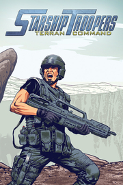

Starship Troopers: Terran Command
Detalles
 |
|
| Tiempo de juego | No Jugado |
| Última actividad | Nunca |
| Añadido | 17/11/2025 13:47:07 |
| Modificado | 18/11/2025 5:43:31 |
| Estado de finalización | Not Played |
| Librería | Playnite |
| Fuente | 2TB DATOS |
| Plataforma | PC (Windows) |
| Fecha de lanzamiento | 16/06/2022 |
| Puntuación de la Comunidad | 85 |
| Puntuación de la Crítica | |
| Puntuación de usuario | |
| Género | Estrategia |
| Desarrollador | The Artistocrats |
| Editor | Slitherine Ltd. |
| Característica | Cloud Saves Préstamo Familiar Un Jugador |
| Enlaces | Punto de encuentro Discusiones Guías Noticias Página de la tienda PCGamingWiki |
| Tag | Acción Bélicos Ciencia ficción Defensa de torres Estrategia ETR Extraterrestres Gestión de recursos Gran banda sonora Inteligencia artificial Juegos de guerra Militares Protagonista villano Sangriento Simulación Tácticas en tiempo real Tácticos Tiempo real Un jugador Valor continuo |
Descripción

La población del inhóspito planeta desértico de Kwalasha necesita nuestra ayuda. Una nueva amenaza a la que no puede enfrentarse pone su vida pacífica de trabajo en las minas en grave peligro: los Arácnidos. Bajo el mando del coronel Hawthorne, la Infantería Móvil recuperará el control del planeta y arrasará con todo ser de más de dos patas. Alístate en esta campaña militar tan emocionante, conoce a personajes inspiradores, visita lugares increíbles y pon tu granito de arena en la guerra contra los bichos.

Quizá haya un número ilimitado de Arácnidos, pero no poseen el entrenamiento táctico y concienzudo de la Infantería Móvil. Coloca tus unidades en los pasos estrechos o en zonas elevadas para obtener ventaja. No obstante, ten en cuenta que las mecánicas de combate como las verdaderas líneas de visión o de tiro pueden limitar tu campo de tiro y propiciar que los bichos te tiendan una emboscada.

Optimiza el ejército con una gran variedad de unidades especializadas. Cada una posee puntos fuertes y débiles distintos, además de un conjunto de habilidades de élite que podrás desbloquear. Los Troopers con Rifle pueden usar la habilidad de su arma para contener las hordas grandes de Arácnidos, los M-11 Marauder bípedos sueltan descargas de mortero fulminantes y el Enlace de la Flota puede llamar a refuerzos o dirigir un ataque aéreo para eliminar oleadas enteras de enemigos.

La plaga de bichos está arraigada en nidos subterráneos complejos. Estos suponen un desafío único que te obligará a encontrar un equilibrio delicado entre el ataque y la defensa. Ten cuidado con las varias aberturas de los túneles, pues de ellas pueden salir hordas de Arácnidos.
Erradica los nidos para acabar con el problema de los bichos de una vez por todas.